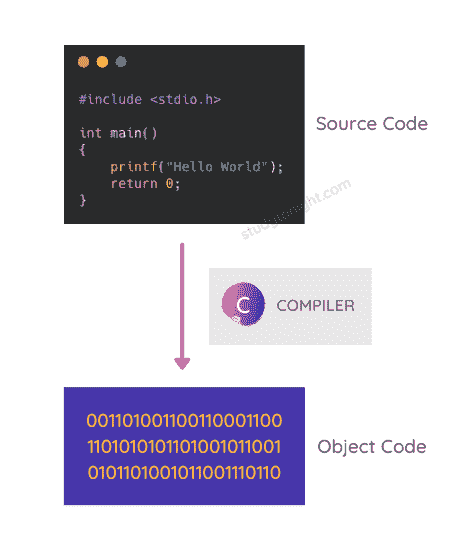
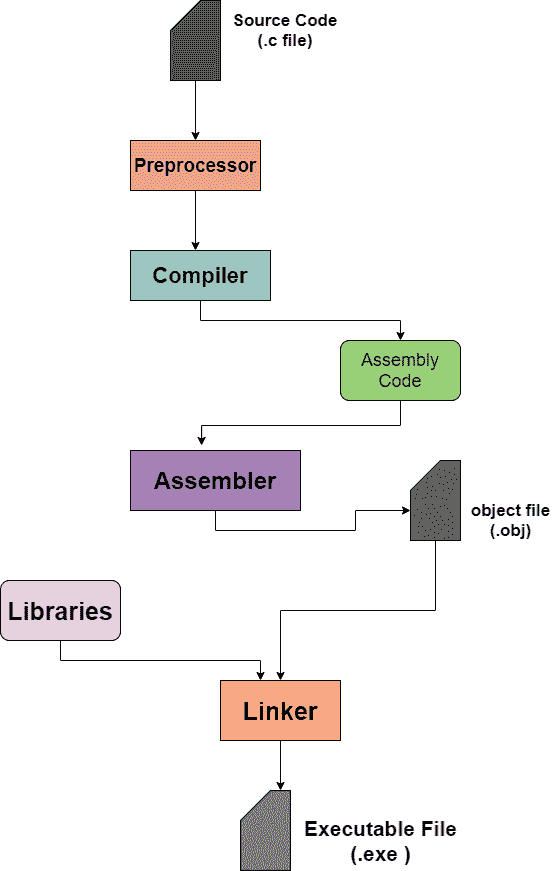

C 源代码编译过程
C 源代码编译过程是一个多步骤的过程，涉及到预处理、编译代码、链接库等。在本教程中，我们将学习如何将 C 代码编译成目标代码。
将任何编程语言(一般为中级或高级语言)编写的源代码转换为计算机可理解的机器级语言的过程称为编译。用于该转换的软件被称为编译器。
在 C 语言中，通过编译，将 C 语言源代码转换为目标代码。

编译器取输入为源代码，以目标代码的形式提供输出。C 语言的完整编译过程进一步分为四个阶段:
预处理，
编译，
组装，以及
链接
编译器检查源代码中是否有任何语法或结构错误，检查后，如果发现源代码没有错误，则生成扩展名为的目标代码。obj (适用于车窗)或。o (适用于 Linux)。
现在让我们看看 C 语言编译过程的不同阶段。
编译过程
如上所述，编译过程的不同阶段如下:
预处理
收集
装配
连接
在下面的流程图中，我们已经解释了编译过程是如何工作的，以及编译 C 语言源代码的不同阶段是什么。

让我们按照执行的顺序来讨论 C 语言源代码编译的所有这些阶段。
步骤 0:源文件的预处理
在这个阶段，源文件的预处理完成。预处理器是接受 C 源代码文件，然后执行以下任务的程序:
它将从源代码中删除注释。
如果使用了任何宏，它将执行宏扩展(不用担心宏，我们稍后会了解它们)
它将执行包含的头文件的扩展。
第一步:预处理器
它是一个在将源程序传递给编译器之前对其进行处理的程序。在这一步，任何 C 程序中使用的预处理程序都将被处理，源代码也准备好进行编译。
每个预处理语句必须以
#开始，其中#被称为预处理器指令。每个预处理指令都是单行代码语句。
#后的单词叫做预处理器命令。
一些预处理器指令如下:
1。#包括
使用头文件的名称在 C 语言程序代码中包含特定的头文件。
2。#定义
这用于在 C 语言中定义一个宏。
3。#错误
这个预处理器命令用于打印错误信息。
就像上面三个一样，还有很多其他的预处理程序，我们将在单独的教程中详细介绍它们。
因此，预处理器扩展源代码(添加所需的信息)，然后将扩展的源代码传递给编译器。
它给出了()。一、)扩展到最初带有()的源代码文件。c )延伸。
第二步:编译器
预处理器扩展的代码然后被传递给编译器。众所周知，编译器是将高级语言(或中级语言)代码转换成汇编代码的程序，再转换成机器能理解的机器码。
因此，预处理器给编译器的预处理代码然后被编译器转换成汇编代码，然后被传递给汇编器。
获取了()的源文件。i )上一步的扩展转换为()。s )由编译器扩展。
第三步:汇编程序
汇编器将从编译器获得的汇编代码转换成目标代码。该步骤中文件的扩展名变为()。obj )。
不要认为汇编程序是生成目标代码的独立程序。汇编程序是 C 语言源代码编译过程的一部分。
当在外行语言中，我们说，C 代码被编译时，它意味着涵盖所有这些步骤的完整编译过程已经完成。
步骤 4:链接器
链接器是一种工具，用于将程序的所有部分按执行顺序链接在一起。该阶段后的代码成为可执行机器码。
在某些情况下，我们的程序可能会引用其他文件中定义的函数。或者，如果某个程序的代码太大，我们可以将它分成两个文件，分别编译，然后使用 Linker 链接。
在 C 语言编译过程中，链接器起着非常重要的作用。
如果你的 C 程序包含一个头文件，并且你正在使用该头文件中定义的一些函数，那么链接器将将库内函数所需的目标代码链接到你的程序的目标代码并将它们打包在一起。
同样，如果您的程序代码太大，并且您将其分成两个文件，那么这两个源代码文件将分别转换为目标代码，然后链接器将链接它们，并使代码准备好执行。这也叫单独编译。
常见问题
以下是一些与 C 语言编译过程相关的常见问题。
Q1。你对编译器这个术语有什么理解？
它是一种计算机程序，用于将高级编程语言或中级编程语言的源代码翻译成机器代码，机器代码可以执行，机器可以理解该做什么。
Q2。什么是预处理器？
预处理器是一个指令，用于指示编译器在实际编译开始之前对源代码进行预处理。C 语言程序的某些部分可以使用预处理器来指定，预处理器只不过是要在编译开始时执行的语句。
Q3。的另一个名字是什么？c 文件？
扩展名为的 C 语言代码文件。c 也被称为源代码文件。
Q4。链接器的作用是什么？
链接器用于将程序的所有部分链接在一起，以便执行。
如果你的 C 程序包含一个头文件，并且你正在使用该头文件中定义的一些函数，那么链接器将将库内函数所需的目标代码链接到你的程序的目标代码并将它们打包在一起。
同样，如果您的程序代码太大，并且您将其分成两个文件，那么这两个源代码文件将分别转换为目标代码，然后链接器将链接它们，并使代码准备好执行。这也叫单独编译。
Q5。C 语言的编译步骤有哪些？
以下是用 C 语言编译的步骤:
预处理器(预处理)
编译器(编译)
汇编程序
链接器(链接)
结论
在本教程中，我们学习了如何编译我们将在即将到来的教程中编写的 C 语言代码。编译中遵循的各种步骤是什么，在这些步骤中会发生什么？
如果你在这之后感到困惑，不要担心，只要阅读它，当我们继续学习教程时，你就会明白一切。